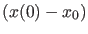
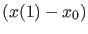
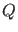
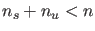
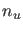
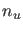

For a homoclinic orbit to a saddle-node equilibrium, the extended defining system undergoes some
small changes. Now  has to be placed in the center-unstable subspace. Analogously,
 must be in the center-stable subspace.
This again is implemented by requiring that the vector is orthogonal to the orthogonal
complement of the corresponding space. So the equations (93) themselves do not really
change; the changes happen in the computation of the matrices .
The defining system now has one equation less than in the HHS case (, with  the dimension of the stable, and  of the unstable eigenspace);
the number of equations is restored however, by adding the constraint that the equilibrium
must be a saddle-node. For this we use the bordering technique, as described in section 4.2.1
of [22].
the dimension of the stable, and  of the unstable eigenspace);
the number of equations is restored however, by adding the constraint that the equilibrium
must be a saddle-node. For this we use the bordering technique, as described in section 4.2.1
of [22].